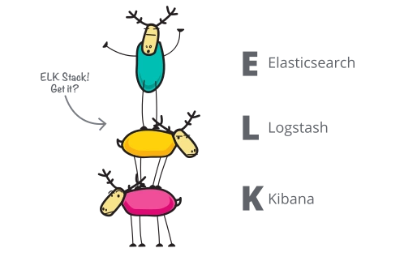
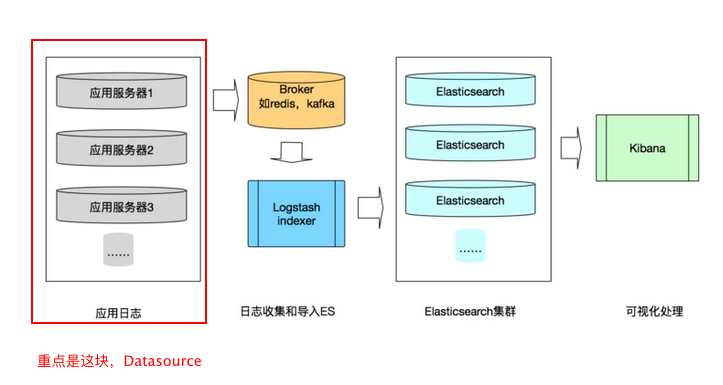

想要扮演上帝，你就不能不去了解魔鬼。
第一部分 简述ELK
ELK 是三个开源项目的首字母缩写，这三个项目分别是：Elasticsearch、Logstash 和 Kibana。
- Elasticsearch 是一个
搜索和分析引擎。 - Logstash 是服务器端
数据处理管道，能够同时从多个来源采集数据，转换数据，然后将数据发送到诸如 Elasticsearch 等存储库中。 - Kibana 则可以让用户在 Elasticsearch 中使用图形和图表对数据进行
可视化。
ELK Stack
Elasticsearch 的核心是搜索引擎，所以用户开始将其用于日志用例，并希望能够轻松地对日志进行采集和可视化。有鉴于此，Elastic 引入了强大的采集管道 Logstash 和灵活的可视化工具 Kibana。
ELK日志系统数据流图如下：
第二部分 日志的重要性
第三部分 egg 日志扩展
Async Local Storage
思考问题
Now what if you want to persist specific data with that specific user whenever the asynchronous code specific to them is being called?
单线程的性质&事件处理机制就不赘述，直接对比下侧代码。
let idSeq = 0; |
|
参考
最佳日志实践（v2.0）
Node.js + ELK 日志规范
手把手教你搭建 ELK 实时日志分析平台
如何更优雅的使用egg的日志体系？ #2006
What’s Async Local Storage in Node.js v14?